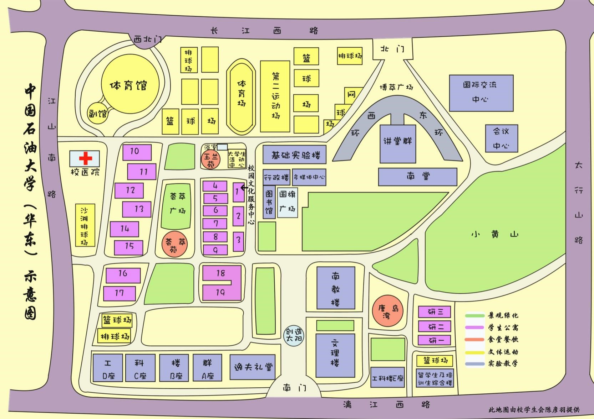

1.思创图书杂志社（2号楼东侧）：销售杂志、考研辅导书、英语4、6级材料、计算机2、3级材料等，营业时间：8:00--22:00。
2.蓝天票务会务礼品中心（15号楼下东侧）：销售飞机票、火车票，承办会议等。
营业时间：8:00--17:30。
3.思创鑫办公用品综合服务部（15号楼下东侧）：销售办公用品等，营业时间：8:00--21:00。
4.依恋化妆品店（13号楼下南侧)：销售各种化妆品，营业时间：9:00--23:00。
. 5.沃特体育（15号楼下东侧）：销售各种体育用品，营业时间：8:00--22:00。
6.天乐禾超市（13号楼东侧2层)：经营各种食品、饮料、生活用品、学习用品等，营业时间：8:00--22:00。
7.博帆超市（17号楼下南侧）：经营各种食品、饮料、生活用品、学习用品等，营业时间：8:00--22:00。
8.鲜阳光超市（15号楼下北侧）：经营各种食品、饮料、生活用品、学习用品等，营业时间：8:00--23:00。
9.1+1超市（研2号楼下西侧）：经营各种食品、饮料、生活用品、学习用品等，营业时间：6:00--24:00。
10.四季鲜水果超市（15号楼下南侧）：销售各种水果，营业时间：8:00--22:30。
11.每日鲜水果店（研2号楼下西侧）：销售各种水果，营业时间：8:30--23:00。
1.中国银行ATM：18号楼下西侧。
2.中国农业银行ATM：18号楼下北侧；研2,3号楼间。
3.中国光大银行ATM：玉兰苑餐厅东门。
4.中国邮政储蓄：大学生活动中心一层东南侧。
1.玉兰苑开水房（玉兰苑餐厅东侧） 开放时间：早上6:00--9:00，中午10:00--13:00，下午16:00--18:00。
收费标准：0.15元/暖瓶，杯子打水免费。
2.荟萃苑开水房（荟萃苑餐厅北侧） 开放时间：早上6:00--9:00，中午10:00--13:00，下午16:00--18:00，晚上21:00--22:00。
收费标准：0.15元/暖瓶，杯子打水免费。
3.唐岛湾开水房（研2号楼下西北侧） 开放时间：早上7:00--8:00，中午11:00--13:00，下午17:00--19:00，晚上21:00--22:00。
收费标准：0.15元/暖瓶，杯子打水免费。
1.博雅印刷有限公司（3号楼东侧）：打印、复印、彩印、试卷印刷、文化衫制作等。
2.虹美摄影文化传媒（17号楼下东侧）：拍照合影，制作活动展板、条幅、幕布、工作证、名片等，营业时间：8:00--19:00。
3.风向广告（17号楼下东侧）：制作活动展板、条幅、宣传册等，内设有联通营业网点可办理手机充值及电脑手机维修等。
营业时间：8:00--18:00。
4.慧心文印（17号楼下南面）：打印、复印、装 订、收发传真等。
营业时间：8:00--20:00。
5.福音图文（研1号楼下西侧）：打印、复印、装 订等。
营业时间：9:00--18:00。
